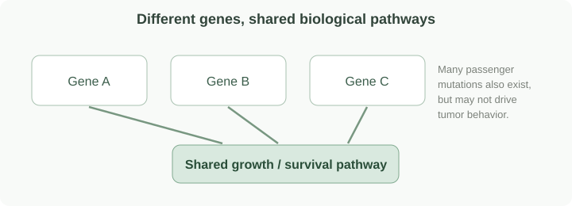

The ending Mukherjee expected never happens
When Siddhartha Mukherjee began writing this book in 2004, he feared that the story would end with Carla Reed's relapse and death. Her acute lymphoblastic leukemia had been severe, and the treatment ahead was dangerous.
But in July 2009, five years after confirming Carla's first remission, Mukherjee drove to her home in Ipswich, Massachusetts, carrying flowers.
Carla was alive, living with her family and raising her children. She had completed five years without recurrence, a milestone that in her particular form of acute leukemia was close to a practical declaration of cure.
For the physician who once doubted she would survive initial chemotherapy, the visit was deeply emotional.
Five years do not erase the experience
Although Carla had survived, the years of illness had left psychological marks.
Mukherjee remembers once delaying a call about a normal marrow result. The delay terrified her. She imagined that the silence meant her leukemia had returned.
For a patient who has endured a potentially fatal disease, an ordinary delay can reopen a world of fear. The medical test may be negative, but the memory of cancer remains.
At Carla's house, the children were playing nearby. Mukherjee hoped that this visit would help mark a separation between her everyday life and the medical world that had occupied it for years.
When he asked how she had managed the exhausting routine of repeated trips to the hospital, she explained that there had been no meaningful alternative. Caring for her children and staying alive had required her to accept treatment as part of daily life.
Survival was not effortless heroism. It was a long sequence of ordinary, difficult choices made under extraordinary pressure.
A new question: How many mutations does a cancer contain?
Part Five established that cancer is fundamentally a genetic disease. But a few genes such as ras, myc, RB, and HER2 were only selected examples.
A real tumor might contain dozens of other alterations. How many? Which ones matter? Why does one person's cancer behave differently from another person's cancer even if both arise in the same organ?
To answer these questions, scientists needed something more ambitious than identifying cancer genes one at a time.
They needed to map the entire genetic landscape of a tumor.
The Human Genome Project creates an opportunity
The completion of the human genome reference sequence in 2003 gave scientists a starting point for comparing normal DNA with the DNA in cancer cells.
Think of the normal genome as the original version of a very large instruction manual. A tumor contains a modified copy with missing sections, altered letters, repeated passages, and occasionally rearranged chapters.
Without an original manual, identifying every change would be extremely difficult. With a reference, scientists could begin looking systematically for differences.
This led to large cancer-sequencing efforts, including The Cancer Genome Atlas (TCGA), along with work by Bert Vogelstein's group at Johns Hopkins.
These projects aimed to identify the mutations carried by cancers from different patients and different organs.
From isolated genes to a genomic map
The scale of the project was enormous. A tumor's genome could differ from normal tissue in many places, and different tumor samples could carry different combinations of changes.
Vogelstein's group examined many genes in samples of breast and colon cancer in the mid-2000s. Other researchers studied brain cancers, pancreatic cancers, leukemias, and additional tumors.
The objective was not merely to create a long inventory. Scientists wanted to find patterns.
A map can show where something exists. To use it well, however, one must determine which features shape the landscape and which are incidental.

The mountains in Vogelstein's landscape
Vogelstein imagined stretching the genome across a two-dimensional surface and marking where tumor mutations occurred.
If a gene was mutated in many samples, its repeated appearance could form a high peak on a visual map. Less frequently mutated genes would produce smaller hills or scattered points.
The chapter's title, 'Thirteen Mountains,' comes from the idea that the apparently chaotic landscape can be organized around a smaller set of important disrupted pathways.
At first, sequencing results looked overwhelming. Some tumors carried dozens of gene mutations, and the pattern varied from one patient to the next.
This was the scientific challenge: how could a clinician ever design treatments for so many different combinations?
Driver mutations versus passenger mutations
The key insight is that not every mutation contributes equally to cancer.
A driver mutation helps a cancer cell grow, survive, or acquire another malignant behavior. It plays a causal role in the tumor's development or maintenance.
A passenger mutation is carried by the tumor but does not meaningfully help drive its dangerous behavior.
Imagine a bus traveling along a road. The driver determines the direction; the passengers are carried along. Counting everyone on the bus does not tell you who controls it.
Similarly, counting every mutation in a tumor does not tell you which ones are therapeutically important.
| Driver mutation | Passenger mutation |
|---|---|
| Helps shape malignant behavior | Often has little or no causal effect on tumor growth |
| Can affect critical pathways | May arise as a byproduct of cell division |
| May recur in important cancer genes across samples | Often scattered more randomly |
| Potentially relevant to treatment selection | Usually not a useful treatment target on its own |
Distinguishing them requires experiments and biological knowledge, not just sequencing.
Why every patient's cancer may differ
Different tumors can accumulate different genetic alterations during their evolution.
Two patients may both have breast cancer, for example, but their tumors may depend on different drivers, carry different additional mutations, and respond differently to therapy.
This explains why a common diagnosis does not necessarily imply one uniform disease.
But diversity does not mean complete disorder. Different mutated genes may still disrupt the same underlying biological pathway.
That observation became crucial for making sense of cancer genomes.
From genes to pathways
A pathway is a sequence or network of molecular interactions that helps regulate a process such as cell division, survival, or response to damage.
Consider a simplified pathway:
RAS → MEK → ERK → growth-related signals.
One tumor might have an abnormal alteration involving RAS. Another might have a change farther down the pathway. The genes are different, but both changes may cause the same general signaling system to become overactive.
If researchers group tumors according to altered pathways rather than only individual genes, meaningful similarities begin to emerge.
Vogelstein's analyses, as described in the book, suggested that many cancers had alterations in roughly 11–15 core pathways, averaging around 13.
Important historical context: this 'thirteen' is a framework from the research period covered by the book, not a permanent rule that every human cancer has exactly thirteen altered pathways.

Is thirteen good news or bad news?
Mukherjee offers two perspectives.
The pessimistic view is that disabling many pathways simultaneously may be extraordinarily difficult. If a tumor has numerous cooperating vulnerabilities, a single targeted drug may not be enough. Combining many medicines can also harm normal cells.
The optimistic view is that the problem may be finite and structured. Instead of facing thousands of unrelated mutations, scientists can focus on a smaller number of recurring biological processes.
Perhaps certain pathways are especially important. Perhaps some combinations will disrupt cancer without requiring a separate drug for every altered gene.
Both perspectives can be reasonable. A map makes a journey more understandable, but it does not automatically remove the mountains.
Genetic anatomy is not genetic physiology
The author draws an important comparison with the history of medicine.
Anatomists once mapped the body's visible structures. Later scientists needed to understand what those structures did. Likewise, sequencing reveals the genetic 'anatomy' of a tumor: which genes have changed.
But knowing that a gene is mutated is not the same as knowing what its mutation does to cell behavior.
Some mutations turn proteins on; others disable them; still others affect when or where they are produced. Some may be completely irrelevant.
Cancer research therefore needs to move from cataloging abnormalities to understanding their functions and then designing interventions.
That sequence resembles the development of earlier fields of medicine: description → mechanism → treatment.
A new direction for therapy
If researchers can identify a cancer's important driver pathways, they may be able to choose treatments that target those vulnerabilities.
HER2-positive breast cancer and BCR-ABL-positive CML already demonstrate the principle: a specific molecular abnormality can guide a useful medicine.
However, most cancers are not as simple as those examples. Some depend on several pathways, or develop resistance when one is blocked.
The immediate scientific challenge is to determine which targets and combinations matter most for a particular patient.
This is an early vision of what later became more widely called precision oncology.
A new direction for prevention
Better understanding of genes and pathways can also improve cancer prevention.
Traditional prevention research often works by identifying risk factors in populations: for example, a strong association between smoking and lung cancer. Laboratory testing may also reveal substances that damage DNA or cause cancer in animals.
But some carcinogenic processes are difficult to detect using a single test. Hormonal exposures, chronic inflammation, and infection-related mechanisms may act through pathways that are not captured by a basic mutation assay.
Understanding the mechanisms of cancer can help scientists design better risk studies rather than relying on one kind of evidence.
The chapter discusses examples including hormone therapy and breast-cancer risk, emphasizing why epidemiology and laboratory research must inform one another.
A new direction for screening and inherited risk
Mukherjee also describes inherited mutations in BRCA1 and BRCA2. These can increase the likelihood of developing breast and certain other cancers.
Identifying an inherited risk can change screening and prevention decisions. For some people, more intensive imaging or preventive interventions may be considered under appropriate medical guidance.
This is not the same as diagnosing an existing cancer. Genetic testing may identify increased risk, not certainty that cancer will develop.
The underlying lesson is that molecular knowledge may affect care before a tumor becomes clinically visible.
The difficult possibility of cancer stem cells
The chapter explores another emerging idea: perhaps some tumors contain populations of cells capable of replenishing the cancer after treatment.
These are often discussed as cancer stem cells or cells with stem-like properties. They may share aspects of the self-renewal machinery used by normal stem cells.
The hypothesis helps researchers ask why a tumor can shrink dramatically and later return. But the exact biology varies, and the existence or role of stem-like populations must be investigated in each context.
Mukherjee uses this subject to return to the book's most disturbing theme: cancer may survive because it corrupts the same regenerative processes that make normal life possible.
Why Carla's story belongs here
Carla's five-year milestone is not a distraction from the genetics. It is the human reason for the entire enterprise.
A genomic map is valuable not because it is impressive to display on a computer screen but because it may eventually help more patients live to see their families, work, and ordinary routines continue.
The visit to Carla's home brings the story full circle: the genetic complexity is vast, but the goal remains personal and concrete.
Important concepts to remember
| Term | Easy meaning |
|---|---|
| Cancer genome | The DNA and genetic alterations present in a cancer cell population |
| Driver mutation | Genetic change that contributes to the cancer's behavior |
| Passenger mutation | Alteration present in a tumor without a major driving role |
| Signaling pathway | Network of molecular interactions controlling cell behavior |
| BRCA1 / BRCA2 | Genes in which certain inherited harmful variants increase cancer risk |
| Precision oncology | Using tumor characteristics to help guide treatment choices |
The deeper meaning of Chapter 49
The apparent chaos of thousands of mutations hides recurring biological patterns. The cancer-genome projects began transforming cancer from a disease named mainly by its location into one understood through its genetic alterations and signaling networks.
But a map is not a treatment. Scientists must learn which mutations matter, what their proteins do, and how to alter those functions safely.
Final takeaway: Carla's survival reminds us what the science is for. Vogelstein's 'thirteen mountains' suggest that the genetic complexity of cancer might eventually be organized into tractable targets—but translating that understanding into better patient outcomes remains the central challenge.